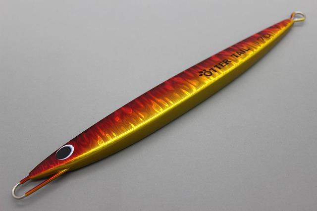
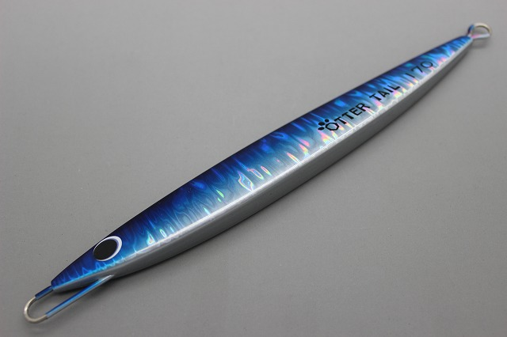
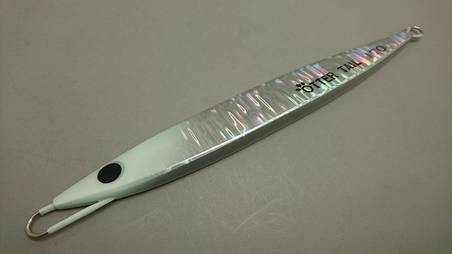
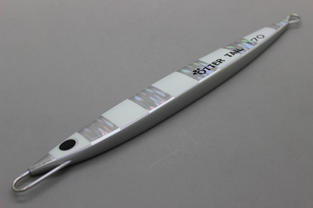

オッターテイル 鉛モデル
（OTTER TAIL）
オッターテイル 鉛モデル（OTTER TAIL）はBREED（ブリード）のメタルジグです。
アルミジグのオッターテイルから形状と重心設定を受け継いだ鉛モデルで、重心を中央から数ミリ前に置くことでアクションを大きく変えているのが最大の特徴。ワンピッチからのストップで、喰わせの間になる水平姿勢を作りやすい1本です。

画像出典:BREED公式HP
スペック
- メーカー
- BREED（ブリード）
- タイプ
- メタルジグ（鉛）
- 重さ
- 40g／50g／80g／110g／140g／170g／200g／220g／250g／280g
- 全長
- 78mm（40g）〜196mm（280g）
- ターゲット
- ブリ・ヒラマサ・カンパチ・サワラ・マグロ・根魚など
- 価格
- 1,190円（40g）〜2,920円（280g）（公式ページの表記）
▼今すぐチェック

オッターテイル 鉛モデルの特徴
わずかな重心の差で食わせの間を作る、オッターテイルの鉛モデル
-
中央から数ミリ前に置いた重心
たった数ミリの重心設定でアクションを変化させている。ワンピッチからのストップで水平姿勢を作りやすく、そこが喰わせの間になる。
-
デルタ形状で引き抵抗を軽く
デルタ形状で、引き抵抗の軽減と浮遊感を両立。安易に長くせず、程良く水に絡むシルエットにしている。
-
あらゆるジャークに対応
高速のコンビネーションからスローなワンピッチまで対応。一定速のワンピッチでも移動距離を抑え、泳ぎの下手な個体を演出できる。
オッターテイル 鉛モデルの使い方
基本はワンピッチジャーク。ジャークの途中でストップを入れ、水平姿勢で見せる間を作るのがこのジグのキモです。
高速のコンビネーションジャークとスローなワンピッチを切り替えて、反応を探っていきましょう。重さは水深と潮の速さに合わせて選びます。
オッターテイル 鉛モデルの得意な状況
オフショアのジギングでブリやヒラマサ、カンパチなどの青物を狙う場面が中心の出番です。
40gから280gまであるので、水深や潮に合わせて同じ感覚で使い分けられます。
ストップで水平姿勢を作れるので、追ってきても口を使わない魚が釣れるきっかけを作りやすいジグです。
ワンポイント
底が取れる重さの中で、まずは軽いほうから使うと、ジグの動きを感じやすくなります。
カラーは赤金やシルバーなどの定番に加え、グロー系の種類も豊富。グローベリー、グローヘッド、オールグロー、ゼブラグロー、ケイムラ、エッジグローは公式価格で100円アップです。
オッターテイルシリーズの使い分け
| モデル | サイズ | 得意な場面 |
|---|---|---|
| 鉛モデル | 40〜280g／78〜196mm | あらゆるジャークに対応する基本形（本記事のモデル） |
| 鉛モデル フラット（F） | 120〜215g／150〜185mm | うす型のシルエットで見せたい時に |
| ワイド | 80〜160g／63〜93mm | 左右対称のセンターバランス。ただ巻きやスローな誘いに |
| アルミ（鋳造式） | 150〜260g／250〜300mm | 比重が軽く、大きなシルエットを1日ジャークしたい時に |
同じ重さなら、アルミは大きなシルエット、ワイドは短いシルエットになります。ベイトの大きさと狙う水深で選び分けましょう。
人気カラー
オッターテイル 鉛モデルはカラーが豊富です。人気カラーを紹介します。

赤金濁り潮や朝夕のローライトに強い定番カラー。

カタクチイワシイワシをイメージしたナチュラルカラー。ベイトがイワシの時に。

シルバー・グローヘッドシルバーのフラッシングにグローヘッドを合わせた1色。

ゼブラグロー／シルバーマグマゼブラグローとシルバーマグマの組み合わせ。アピールを強めたい時に。
画像出典:BREED公式HP
オッターテイル 鉛モデルに似ているルアー
-
 撃投ジグ ストライク
カルティバ
詳細はこちら＞
撃投ジグ ストライク
カルティバ
詳細はこちら＞
65g〜250g（145mm〜225mm）の大型青物向けメタルジグ。ブリ・カンパチ・ヒラマサと、狙う魚が近い。
-
 撃投ジグ レベル
カルティバ
詳細はこちら＞
撃投ジグ レベル
カルティバ
詳細はこちら＞
同じ撃投ジグのシリーズ。青物を狙うメタルジグとして比べたい1本。
-
 フォルテン
ブルーブルー
詳細はこちら＞
フォルテン
ブルーブルー
詳細はこちら＞
20g・30g・40gのテールヘビー型メタルジグ。高い遠投性能と素早いフォールが持ち味で、ショアから青物を狙いたい時の選択肢に。